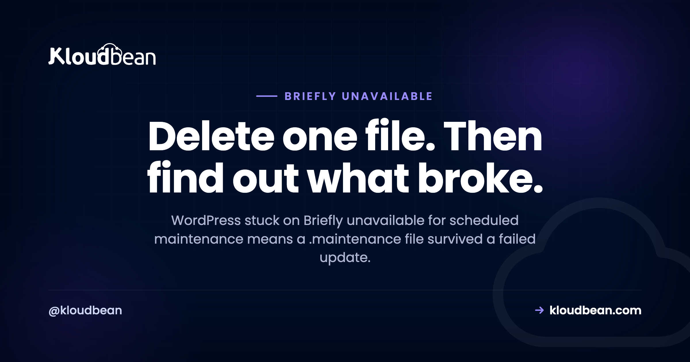

Briefly Unavailable for Scheduled Maintenance: One File Is Holding Your Site Hostage

Your whole site, front end and admin, is showing one line of text: "Briefly unavailable for scheduled maintenance. Check back in a minute." A minute passes. Then twenty. Nothing changes, because nothing is going to. This is not a crash, a hack, or a database failure. WordPress writes a file called .maintenance before it updates anything, shows that message to every visitor while the update runs, and deletes the file when it finishes. If the update died partway, the file survives, and WordPress keeps honouring an instruction that has no process behind it any more. Deleting the file takes ten seconds. The more useful question is what failed mid-update, because something did.
Delete the file named .maintenance from your WordPress root directory, the same folder as wp-config.php. It is a hidden file, so enable "show hidden files" in your file manager or use rm .maintenance over SSH. The site comes back immediately. Then check whether the interrupted update actually completed, because a plugin, theme, or core update stopped halfway and may have left mismatched files behind.
What WordPress was doing when it stopped
The mechanism is simple, which is why the fix is simple.
When WordPress updates core, a plugin, or a theme, it puts the site into maintenance mode first. It creates .maintenance in the installation root, containing a timestamp. While that file exists, WordPress intercepts every request and serves the maintenance message instead of loading normally. Once the update completes, WordPress deletes the file and traffic resumes.
Anything that stops the update process between those two points leaves the file behind. A PHP timeout on a large plugin, the browser tab closed mid-update, a memory limit hit while unpacking, a lost connection while downloading, or several updates fired at once from the bulk-update screen.
So the message is accurate about what it was told and wrong about the situation. It is not lying, it is following a note left by a process that is no longer running.
Delete the file
Any of these work. Pick whichever access you have.
# Over SSH, from the WordPress root
ls -la | grep maintenance
rm .maintenanceOver SFTP, connect and look in the folder containing wp-config.php, wp-content, and wp-admin. You will probably not see .maintenance at first, because a leading dot makes it hidden and most clients hide those by default. In FileZilla that is Server, then Force showing hidden files. In Cyberduck it is View, then Show Hidden Files. Turn that on, delete the file, reload the site.
With WP-CLI, the maintenance mode command handles it directly and is worth knowing:
# Is maintenance mode actually active?
wp maintenance-mode status
# Turn it off, which removes the file
wp maintenance-mode deactivateIf you have a file manager in your hosting dashboard, it can do the same thing, and it usually has a setting to reveal dotfiles. The site should recover the instant the file is gone. No cache clearing, no restart.
Do not stop there, because something failed
This is where most advice ends and where the actual risk begins. The message was a symptom. An update was interrupted, and interrupted updates leave inconsistent state.
Three shapes of leftover damage, in the order worth checking:
A half-extracted plugin or theme. Files were being replaced when the process died, so you may have some files from the new version and some from the old. The plugin may load, may fatal, or may misbehave in ways that make no sense. The reliable fix is to reinstall that plugin cleanly rather than trusting the mixture.
Core files updated but the database not migrated. WordPress runs database routines after files are in place. If it stopped between the two, visiting /wp-admin/upgrade.php prompts the database update it never got to run.
Nothing wrong at all. Entirely possible. The update finished and only the cleanup step was missed. Verify rather than assume.
# Are core files intact and matching this version?
wp core verify-checksums
# Same check for plugins from the directory
wp plugin verify-checksums --all
# What version are we actually on, and is a database update pending?
wp core version
wp core update-dbverify-checksums is the command I would run first. It compares your files against the official release and names anything modified or missing, which turns "I think it updated" into a fact. It is also the fastest way to spot a genuinely tampered file if you were worried this was a compromise.
If the site now shows a fatal error instead of the maintenance message, that is a different and better-documented problem, and our guide to the critical error message covers reading the actual error rather than guessing at it.
Why it happened, so it stops happening
| Cause | Tell | Fix |
|---|---|---|
| PHP execution timeout | Large plugin, or a slow shared server | Raise max_execution_time, or update via WP-CLI |
| Memory exhausted while unpacking | Fatal about allowed memory size in logs | Raise the PHP memory limit |
| Bulk updating many items | Happened on the update-everything screen | Update in small batches |
| Browser tab closed or navigated away | Someone got impatient | Let it finish, or use WP-CLI |
| Disk full | Writes fail across the board | Free space, check backups and logs |
| Slow or dropped download | Update stalled early | Retry, ideally over the command line |
The single most effective change is to stop updating through a browser tab. A web request has a time limit, and a plugin update that outlives it dies exactly where this problem comes from. WP-CLI runs on the server without that ceiling, which is why the same update that keeps failing in the dashboard usually completes without drama from the command line.
# The update path that does not depend on a browser staying open
wp plugin update --all
wp theme update --all
wp core updateThe second most effective change is to stop doing it on the live site. That is what staging exists for.
The prevention that actually works
Updates break things sometimes. That is not a failure of discipline, it is the nature of updating software you did not write. What discipline gets you is that a break is uneventful.
Update on a copy first. A staging site is a duplicate where an update can fail harmlessly. Push it live once it is proven. On Kloudbean, staging is available for WordPress and Laravel applications, which is exactly the situation this article is about.
Have a backup from before the update, and know it restores. An untested backup is a hope. Kloudbean takes automatic backups, and the part worth doing yourself is a restore test at least once, so you find out whether it works before you need it.
Update in small batches. Two plugins at a time is slower and it tells you which one caused a problem. Bulk-updating twenty is fast right up until it is not.
Give PHP room. Most interrupted updates are a timeout or a memory limit. Sensible limits remove the most common cause outright.
None of this is exciting, and the combination turns this error from a panic into a footnote. Our guides to WordPress staging and server backups cover both halves properly.

Using maintenance mode deliberately
Worth knowing the flip side: this mechanism is genuinely useful when you want it. If you are doing planned work and would rather visitors saw a message than a half-broken site, you can enter maintenance mode on purpose.
# On, then off again when you are done
wp maintenance-mode activate
wp maintenance-mode deactivateOne caveat that matters if you leave it on for any length of time: WordPress serves that page with a 503 status, which is correct, because 503 means temporarily unavailable and tells search engines to come back rather than to drop the page. That is the right behaviour for minutes or hours. Left in place for days, a 503 stops looking temporary, so if you need a maintenance page for an extended period, use a proper one rather than this file. Our guide to 503 responses covers what that status means to the rest of the internet.
Running it somewhere real
Honestly, this is a WordPress mechanism and any host would tell you to delete the same file. What a host changes is how often you meet it and how quickly you recover.
The practical parts: staging for WordPress and Laravel, so updates get tested on a copy instead of on your visitors. Automatic backups, so a bad update is reversible rather than permanent. Sensible PHP resources, which removes the timeout and memory causes that produce most interrupted updates. Managed servers across seven clouds with the firewall and intrusion prevention configured by default. And one dashboard covering servers, applications, and databases, so when you do need to reach the filesystem you are not hunting for credentials.
If the maintenance message turns out to be masking something worse, the two neighbours are the critical error page and the database connection error.
If the fix did not hold
On preventing this, WordPress staging environments and server backups. On the errors it can hide, the critical error message and database connection errors. On the command line that avoids the whole problem, the WP-CLI guide. On what a 503 signals, 503 after deploying. And on keeping the site defensible generally, secure WordPress hosting.
Break the update, not the site.
Managed WordPress on seven clouds with one-click staging, automatic backups, free SSL, and a firewall with intrusion prevention by default, so a failed update is recoverable instead of public. From $8/mo, with free migration assistance. Start at kloudbean.com.
Staging · Automatic backups · Free SSL · 7 clouds · Flat from $8/mo
FAQ
How do I fix "Briefly unavailable for scheduled maintenance"?
Delete the .maintenance file from your WordPress root folder, the one containing wp-config.php. It is hidden because of the leading dot, so switch on hidden files in your SFTP client or file manager, or run rm .maintenance over SSH. The site returns immediately, with no cache clearing needed.
Where is the .maintenance file?
In the root of your WordPress installation, alongside wp-config.php, wp-admin, and wp-content. It will not appear in most file listings by default because files beginning with a dot are hidden, so enable hidden files first or use ls -la over SSH.
Why is my site stuck in maintenance mode?
Because an update was interrupted. WordPress creates .maintenance before updating and deletes it afterwards, so if the process died in between the file survives and WordPress keeps obeying it. Common causes are a PHP timeout, exhausted memory, bulk-updating many items at once, or the browser tab being closed mid-update.
Will I lose data by deleting the .maintenance file?
No. The file only contains a timestamp and acts as a flag telling WordPress to show the maintenance message. Removing it does not touch your database, content, or settings. It ends the maintenance state and nothing else.
My site is back but a plugin is behaving strangely. Why?
Because the interrupted update may have left a mixture of old and new files for that plugin. Reinstall it cleanly rather than trusting the blend, and run wp core verify-checksums to confirm core files match the official release. If a database migration never ran, visiting /wp-admin/upgrade.php will prompt it.
How do I stop this happening again?
Update using WP-CLI rather than a browser, since a web request has a time limit and a slow update that outlives it dies exactly where this problem starts. Beyond that: test updates on a staging copy, keep automatic backups you have actually restored once, update in small batches instead of all at once, and give PHP enough time and memory.
Can I put my site into maintenance mode on purpose?
Yes, with wp maintenance-mode activate and deactivate. It is a reasonable choice for short planned work. Bear in mind WordPress serves that page with a 503 status, which is correct for something temporary, so for maintenance lasting days you want a purpose-built page rather than this flag.
Does this mean my site was hacked?
Almost certainly not. This message is WordPress's own update mechanism doing exactly what it was designed to do with a file that should have been cleaned up. If you want to rule out tampering while you are in there, wp core verify-checksums compares your files against the official release and reports anything altered.